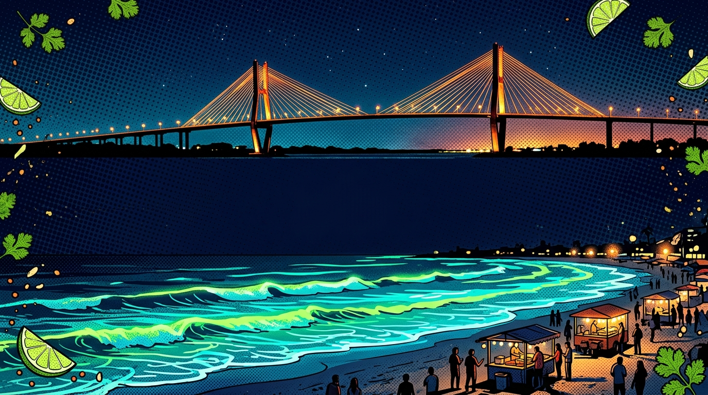
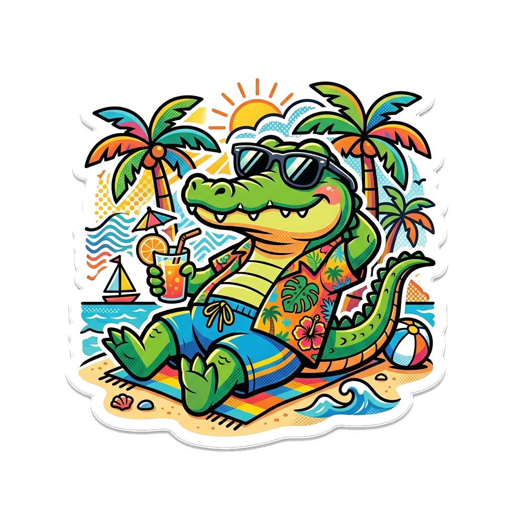
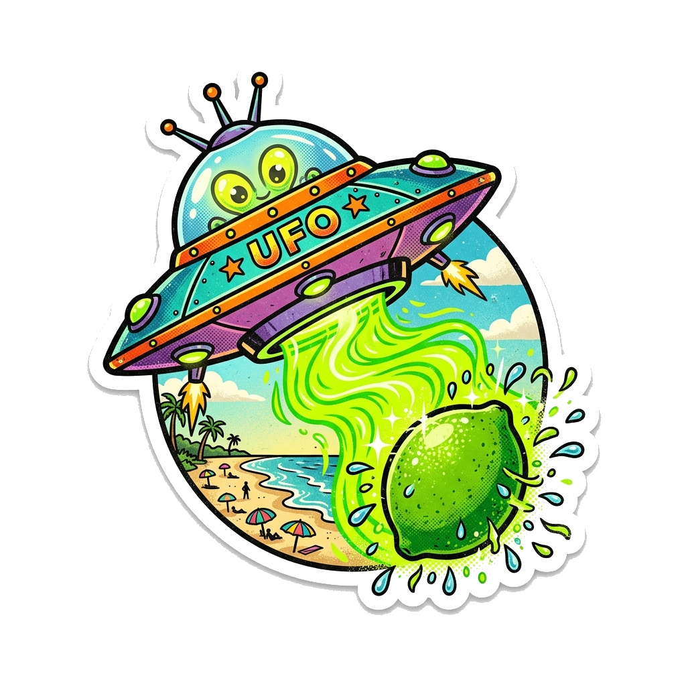
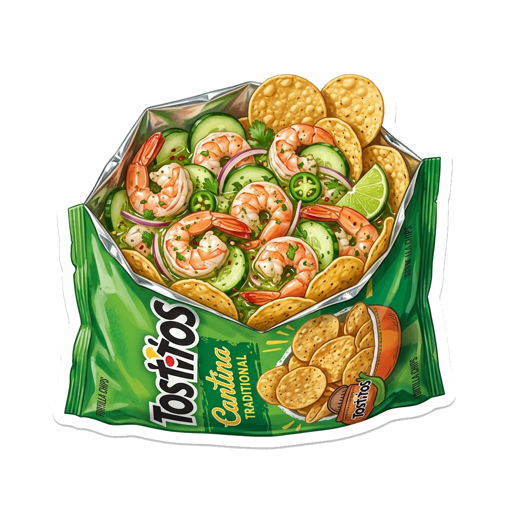
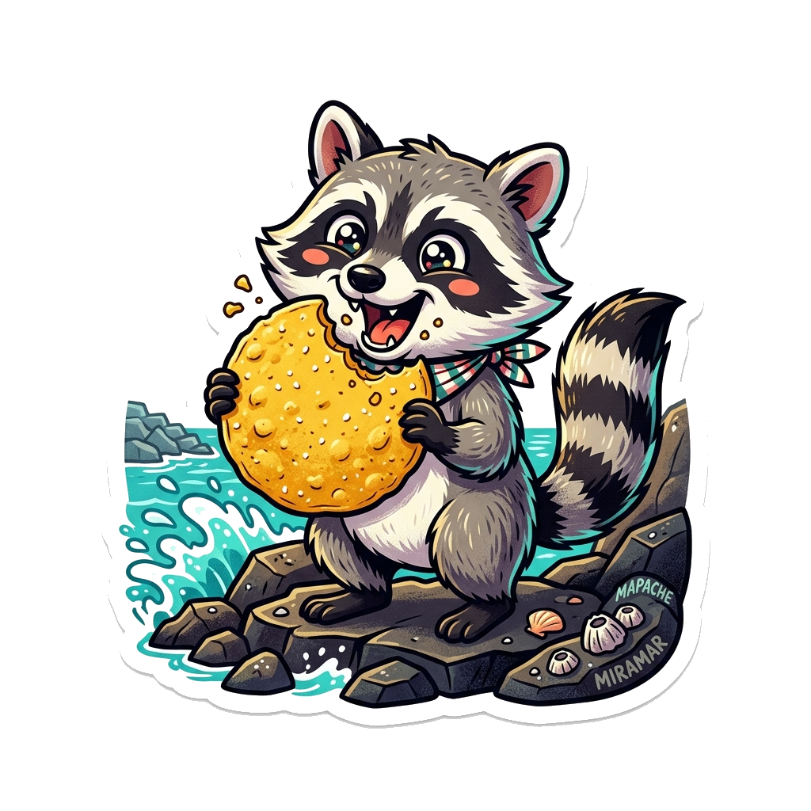

TOSTIAGUACHILE
VERDE TRADICIONAL
¡El antojo más reportado del Golfo! Camarón marinero fresco, salsa verde serrano y el crujido legendario de Tostitos Salsa Verde.
⚡ Cero formularios • Respuesta inmediata • Aparta tu porción antes de que se agote

Rey de la Laguna en Miramar con lentes y bermuda



El catador oficial de las Escolleras de Miramar
«El producto es preparado frente a usted para corroborar su frescura»
Nuestra hielera viaja equipada con dos cubetas grado alimenticio y termómetro activo monitoreado a temperatura estricta (0°C a 4°C). Nuestro repartidor despliega la mesa plegable en tu puerta y ensambla al instante tus ~100g de camarón mariposa bañados en aguachile verde directo en tu bolsa de Tostitos Salsa Verde.
La Trilogía del Sabor Jaibo
Calidad artesanal con ingredientes de costa preparados con precisión.
~100g Camarón Mariposa
Camarón fresco rigurosamente seleccionado, desvenado y abierto en corte mariposa. Mantenido en cadena de frío para conservar su consistencia jugosa y firmeza.
Tostitos Salsa Verde
Únicamente Tostitos Salsa Verde. La fritura perfecta que soporta el aguachile sin aguarse y aporta el toque saladito y acidulado emblemático de Tampico.
Aguachile Serrano & Limón
Emulsión fresca de chiles serranos verdes, pepino recién cortado, cebolla morada y jugo de limón Colima. Picoso, adictivo y perfecto para revivir cualquier fin de semana.
La Pandilla de la Costa Jaiba
Nuestra identidad visual rinde tributo a las leyendas vivas de Tampico y Ciudad Madero.
Juancho el Cocodrilo
El rey de la Laguna del Carpintero y fanático de Playa Miramar. Siempre exige su bolsa bien reportada con camarones mariposa frescos.
Mapache Glotón
Embajador de las piedras y las olas. Conoce a detalle el crujido perfecto de los Tostitos y se niega rotundamente a comer tostito aguado.
OVNI de Miramar
Desvía huracanes y abduce limones jugosos desde las profundidades del Golfo. El tostiaguachile es el único platillo que los hace aterrizar.
¿Cómo y cuándo pedir?
Para garantizar que el camarón conserve su frescura estricta (0°C a 4°C), operamos exclusivamente los fines de semana bajo tanda controlada:
-
⏰
Servicio Sábados y Domingos: Horario de entrega: 1:00 PM a 5:00 PM.
-
🛵
Rutas Anunciadas en Redes Sociales: Publicamos en Facebook, Instagram y TikTok las rutas fijas para Tampico y Ciudad Madero.
-
📍
Ubicación Oficial: Colonia Flores, Tampico, Tamaulipas. WhatsApp: 833 252 09 88.
🗺️ Zonas de Entrega Principales
Col. Flores, Altavista, Cascajal, Centro Tampico, Águila.
Petrolera, Av. Universidad, Lomas del Chairel, Zona Dorada.
Unidad Nacional, Ampliación, Árbol Grande, Playa Miramar.
* El costo de entrega se cotiza por WhatsApp según tu ubicación exacta.

¿SE TE HIZO AGUA LA BOCA?
Sin formularios ni demoras. Toca el botón, dinos tu colonia y aparta tu Tostiaguachile Verde Tradicional ($170 MXN) para el fin de semana.
APARTAR POR WHATSAPP ($170 MXN) 👉WhatsApp Oficial: 833 252 09 88 • Cupo limitado por tanda